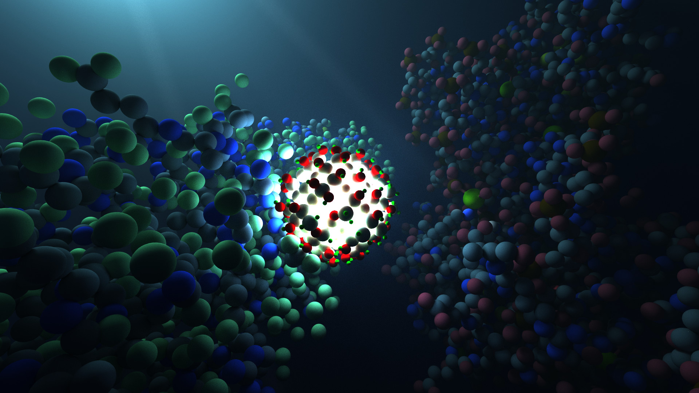
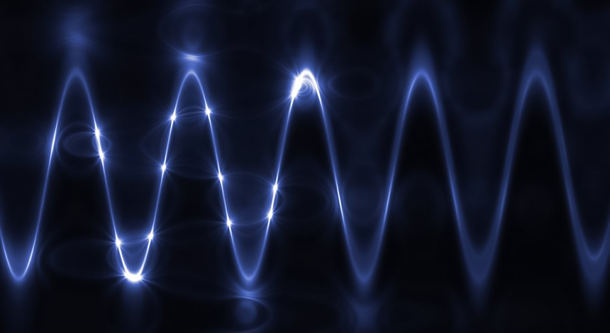
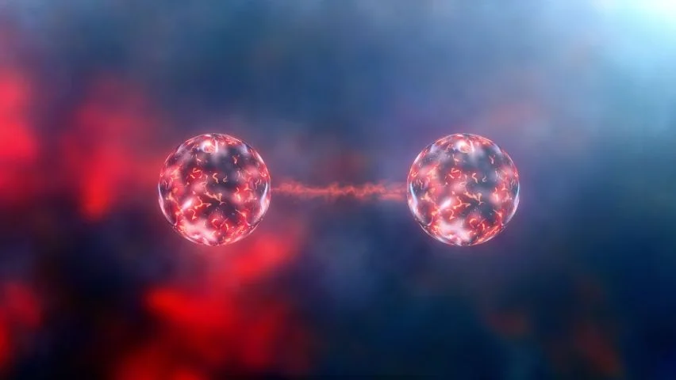
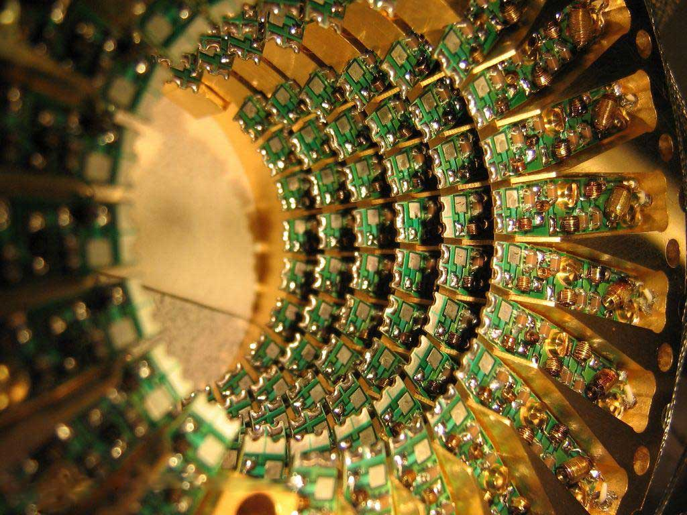
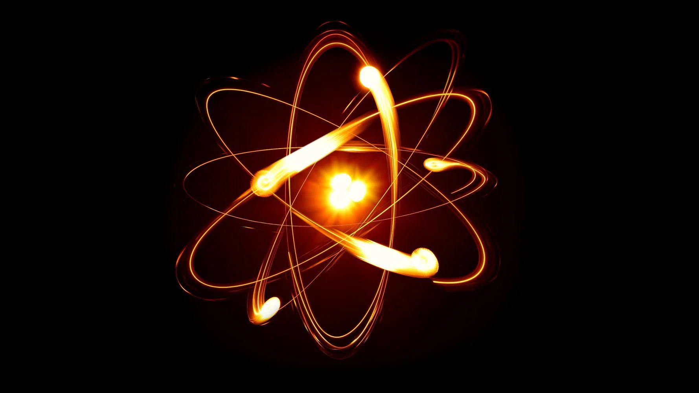

Welcome to the fascinating realm of quantum physics, a branch of science that delves into the fundamental nature of the universe at its smallest scales. In the quantum verse, reality takes on a surreal and mind-bending character, challenging our classical intuitions and opening doors to revolutionary possibilities.
(Press the images to explore more detaily.)
1. The Quantum Basics:

2. Wave-Particle Duality:

3. Quantum Entanglement:

4. Quantum Computing:

5. Quantum Reality and Interpretations:

1. The Quantum Basics:
Quantum mechanics is a fundamental branch of physics that describes the behavior of matter and energy at the smallest scales, typically at the level of atoms and subatomic particles. It represents a departure from classical mechanics, which governs the motion of larger objects. The foundation of quantum mechanics was laid in the early 20th century by groundbreaking contributions from scientists like Max Planck, Albert Einstein, Niels Bohr, and Erwin Schrödinger.
One key principle of quantum mechanics is the wave-particle duality, suggesting that particles like electrons and photons can exhibit both wave-like and particle-like properties. This duality challenges our classical intuition and highlights the inherently probabilistic nature of quantum systems. The state of a quantum system is described by a wave function, a mathematical expression that encapsulates the probability distribution of finding a particle in a particular position or possessing a certain energy.
Quantum superposition is another crucial concept, stating that particles can exist in multiple states simultaneously until a measurement is made, collapsing the system into one of the possible outcomes. This phenomenon is famously illustrated by Schrödinger's thought experiment involving a cat that is both alive and dead until observed.
Entanglement is a unique quantum phenomenon where two or more particles become correlated in such a way that the state of one particle instantaneously influences the state of the other, regardless of the distance between them. This phenomenon, famously referred to by Einstein as "spooky action at a distance," has been experimentally confirmed and forms the basis for quantum communication protocols.
Quantum mechanics has practical applications in various fields, including quantum computing, quantum cryptography, and quantum sensing. Harnessing the principles of quantum mechanics has the potential to revolutionize technology and our understanding of the fundamental nature of the universe. Despite its counterintuitive aspects, quantum mechanics has stood the test of time and continues to be a cornerstone of modern physics.
2. Wave-Particle Duality:
Wave-particle duality is a fundamental concept in quantum mechanics that challenges our classical understanding of the nature of particles. It proposes that particles, such as electrons and photons, exhibit both wave-like and particle-like characteristics. This duality was first articulated by Louis de Broglie in 1924, who suggested that if light, traditionally considered a wave, could exhibit particle-like behavior (as demonstrated by the photoelectric effect), then particles should also display wave-like properties.
The wave-particle duality is mathematically described by the wave function, which represents the probability amplitude of finding a particle at a particular location. This probability distribution introduces an inherent uncertainty, as the exact position and momentum of a particle cannot be simultaneously known with precision due to Heisenberg's uncertainty principle.
Experiments such as the double-slit experiment further highlight wave-particle duality. When particles are fired through two slits, they create an interference pattern characteristic of waves, indicating that particles can interfere with themselves. This phenomenon underscores the probabilistic nature of quantum entities, where the act of measurement collapses the wave function, determining the particle's specific state.
While the wave-particle duality challenges classical intuition, it has become a cornerstone of quantum mechanics. The concept is integral to understanding the behavior of matter at the quantum level and has profound implications for the foundations of physics, shaping our perception of particles as dynamic entities with both particle and wave attributes.
3. Quantum Entanglement:
Quantum entanglement is a fascinating and perplexing phenomenon in quantum physics that highlights the interconnected nature of particles, even when separated by vast distances. When two or more particles become entangled, their quantum states become correlated in such a way that the state of one particle instantaneously influences the state of the other, regardless of the spatial separation between them. This phenomenon was famously referred to by Albert Einstein as "spooky action at a distance."
Entanglement arises during certain quantum interactions, such as the decay of a particle into two entangled particles. The entangled particles share a combined quantum state, and any measurement performed on one particle instantly determines the state of the other, irrespective of the physical distance between them. This phenomenon seemingly violates classical notions of locality and challenges our intuitive understanding of cause and effect.
Entanglement has been experimentally confirmed through numerous studies, including the Aspect experiment in the 1980s. The phenomenon forms the basis for quantum teleportation and quantum key distribution, two applications with potential implications for quantum computing and secure communication.
While quantum entanglement raises intriguing questions about the nature of reality and the limitations of classical intuition, it remains a well-established and experimentally validated aspect of quantum mechanics. The phenomenon continues to fuel ongoing research into the foundations of quantum physics and holds promise for transformative technologies in the realm of quantum information science.
4. Quantum Computing:
Quantum computing is a cutting-edge field that leverages the principles of quantum mechanics to perform computations in ways fundamentally different from classical computers. Unlike classical bits, which can exist in states of either 0 or 1, quantum bits, or qubits, can exist in superpositions of both states simultaneously. This allows quantum computers to process and store vast amounts of information in parallel, offering the potential for exponential speedup in solving certain types of problems.
One of the key algorithms demonstrating the power of quantum computing is Shor's algorithm, which can efficiently factor large numbers, posing a threat to classical encryption methods. Additionally, Grover's algorithm highlights the potential of quantum computers for searching unsorted databases quadratically faster than classical algorithms. These capabilities could revolutionize fields such as cryptography, optimization, and simulation.
Building and maintaining stable qubits is a significant technical challenge, as qubits are highly susceptible to environmental interference and decoherence. Researchers are exploring various physical implementations, including superconducting circuits, trapped ions, and topological qubits, to overcome these challenges. Major tech companies and research institutions are actively pursuing the development of practical quantum computers, with some promising progress being made in recent years.
While large-scale, fault-tolerant quantum computers are still in the experimental stage, the potential impact of quantum computing on fields such as materials science, artificial intelligence, and drug discovery is generating excitement and investment. As the technology advances, quantum computing is poised to reshape our computational capabilities, ushering in a new era of problem-solving and technological innovation.
5. Quantum Reality and Interpretations:
Quantum reality is a complex and intriguing aspect of the quantum world, characterized by phenomena that challenge classical intuitions. The nature of quantum reality is often discussed through various interpretational frameworks, each attempting to make sense of the peculiarities observed in quantum mechanics.
One prominent interpretation is the Copenhagen interpretation, which emphasizes the role of observation in collapsing the wave function and determining the state of a particle. According to this view, the act of measurement brings about definite outcomes and defines the reality of the quantum system.
The Many-Worlds Interpretation proposes a different perspective, suggesting that all possible outcomes of a quantum event actually occur in separate, non-communicating branches of the universe. In this framework, the superposition of states persists, and every possible outcome becomes a reality in a parallel universe.
Another interpretation is the pilot-wave theory, or de Broglie-Bohm interpretation, which posits the existence of a hidden variable guiding the behavior of particles. This hidden variable, combined with the wave function, determines the particle's trajectory, providing a deterministic explanation for quantum phenomena.
The transactional interpretation introduces the concept of advanced waves that travel backward in time, allowing for a transaction between an emitter and absorber particle. This bidirectional communication helps explain entanglement and offers a unique perspective on the nature of quantum events.
Despite these interpretations, the question of what quantum reality truly is remains open. The philosophical implications of these interpretations continue to fuel debates and inquiries into the nature of reality, observation, and the limitations of human understanding in the quantum realm. Quantum reality challenges our classical intuitions and continues to be a rich area of exploration at the intersection of physics and philosophy.